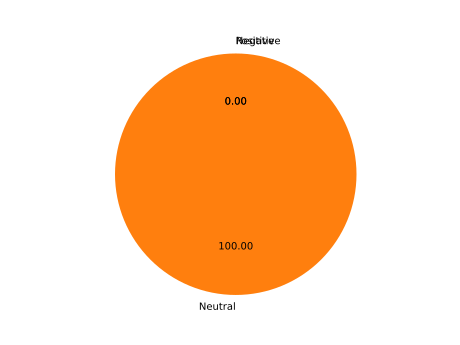

Tweet sentimental analysis and word cloud

*Spiegazione dell'imagine*
Stats
On {{ sentimentalAnalysisDatas['analyzedTweets'] }} tweets analyzed:
- {{ sentimentalAnalysisDatas['positivePercentage'] }}% of tweets speak positively about "{{ filterDatas['query'] }}"
- {{ sentimentalAnalysisDatas['neutralPercentage'] }}% of tweets speak neutral about "{{ filterDatas['query'] }}"
- {{ sentimentalAnalysisDatas['negativePercentage'] }}% of tweets speak negatively about "{{ filterDatas['query'] }}"

*Spiegazione dell'imagine*